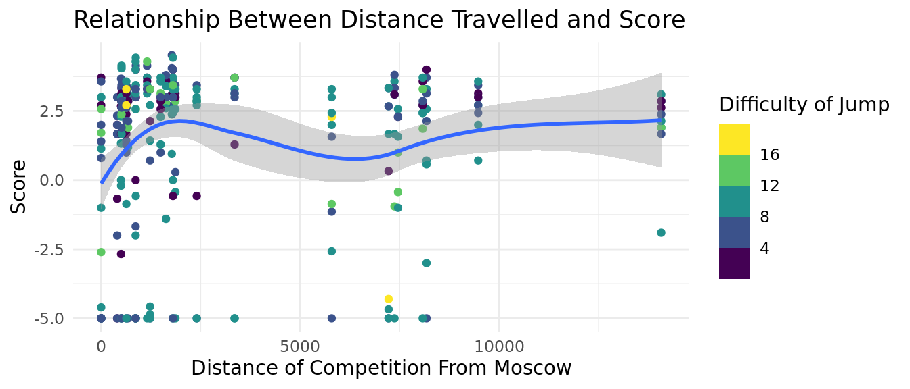

library(tidyverse)
library(tidymodels)
trusova_jump <- read.csv("data/trusova_jumps.csv")Impact of Select Variables on Trusova’s Jump Execution
Report
Introduction and Data
Figure skating is a sport in which athletes complete programs full of jumps, spins, and footwork while making sure to perform to their music. Scoring for figure skating consists of two components, the technical score and the artistic score. And it’s this scoring that is the source of much of the controversy in the figure skating world.
In recent years, women’s figure skating has experienced a “quad revolution” of sorts, with female skaters beginning to perform quadruple jumps with a higher frequency. This has been met with many questions, from fans, coaches, and authorities alike. Are quadruple jumps – where the skater rotate four revolutions in the air – valued too heavily? Are they leading to degradation in the performance of other elements?
Little research has been done on the variables that affect a skater’s ability to successfully perform a jump beyond basic biomechanics. A 2006 article presented a study investigating the biomechanical variables affecting the technical success of a jump. The researchers attached markers to anatomical points on the skater’s body, filmed the jump, and conducted analysis in two ways: objectively using biomechanical measures and subjectively by accredited figure skating judges. They found that the correlation between “biomechanical landing strategies” and judge perception is strong enough to support the continuation of the current subjective judging methods in figure skating (Lockwood, Gervais, and Mccreary 2006). However, there are many other factors beyond a skater’s biomechanics that affect figure skating jump success. Our investigation seeks to explore these variables.
The variables we consider within this investigation are the difficulty of the jump, the altitude of the competition location, and the travel distance from an athlete’s home training city of the competition location. It is important to note that the existing research for these variables in relation specifically to figure skating is sparse. There are many research articles on altitude and how it may affect athletes in other sports, but it was difficult to find articles that specifically mentioned figure skating rather than endurance sports (Chapman, Stickford, and Levine 2010). Similarly, there are not many research articles in general about how distance away from an athlete’s home city can affect their performance. The closest and most relevant piece was a descriptive review by the NIH about how jet lag could potentially affect physiology in competitive athletes (Lee and Galvez 2012). It is based on these pieces that we explore these variables further within our project.
One of the skaters that helped bring the “quad revolution” about is Alexandra Trusova, a Russian figure skater whose national and international competitive career spanned from 2014 to 2022. She was the first to perform several types of quadruple jumps in competition, and her earlier competitive years are well documented. Thus, she is a prime subject for analysis.
THE DATA
Our data is collected from the competition records of the International Skating Union, Tallinn Trophy, and the Russian Skating Federation. The International Skating Union (ISU) is the governing body of figure skating competition around the world. ISU-sanctioned and many other competitions have websites containing records of the detailed results of the competition. Each event has an attached pdf file, recording every skater’s detailed scoring breakdown, including the judges’ evaluation of their jumps. After obtaining Alexandra Trusova’s competitive history, the corresponding data for each of her jumps completed in national championships or international competition was pulled into a dataset, accompanied by relevant data about date and the competition location. We created this dataset ourselves as there were only PDF versions of her competition records available online.
Below is a table containing the sources of our data:
RELEVANT VARIABLES AND JUSTIFICATION
| Variable | Description |
|---|---|
| season | The competition season in which the jumping pass was completed. Spans two calendar years (from summer of one year to spring of the next year). |
| altitude_in_m | The altitude, in meters, of the competition location. |
| distance_moscow_km | Distance, in kilometers, of the competition location from Moscow, Trusova’s training city. |
| jump | The code entered for the jumping pass completed. The 5 types of jumps are axel (denoted by “A”), salchow (“S”), toeloop (“T”), loop (“Lo”), flip (“F”), and lutz (“Lz”). These jumps can have anywhere between 1-4 rotations and can be performed as a solo (ex. 2A) or combination jump (denoted by plus sign, ex. 3Lz+3T or 3F+2T+2Lo). |
| jump_bv | The difficulty value, in points, of the jumping pass completed. |
| goe_raw | The grade of execution, a measure of the quality of the jump. Each judge - there are typically 7 or 9 - assign a GOE value between -5 (bad) to +5 (excellent). Raw GOE is calculated by dropping the highest and lowest values and finding the average of the remaining values. Due to adjustments to the GOE system after the 2017-2018 season, GOEs for jumping passes from competitions before June 2018 are scaled up by 5/3 to adjust from the -3 to 3 scale to the -5 to 5 scale. |
Altitude: We chose to test jump score by altitude because of how competing at different altitudes can affect the body and sport of an athlete. Less oxygen is available at higher altitudes, which typically corresponds to a lower amount of oxygen in athletes’ muscles. However, air at higher altitudes is less dense than air at lower altitudes, which can indicate less air resistance. This means that competing at higher altitudes could have an interesting effect regarding skill sports such as figure skating, which requires great amounts of muscle strength and the ability to move quickly and precisely through air (Chapman, Stickford, and Levine 2010).
Location: The physical location of a competition has the potential to affect an athlete in several ways, particularly taking into account travel time and circadian rhythm adjustment. We will test score by competition distance from Moscow (Trusova’s home training city) to determine whether or not there is a correlation between performance and travel time/travel distance. “Jet lag”, or the necessary adjustment of the body’s circadian rhythm to a new time zone, can affect the energy of an athlete, and therefore may be able to affect performance quality (Lee and Galvez 2012).
ETHICAL CONCERNS
Despite her fame within the figure skating world, Alexandra Trusova was a minor during the time period this dataset covers. As such, the only data we gathered was taken from publicly available records. We also took care to not include variables that evaluated Trusova’s skating in a subjective manner and kept our analysis to quantitative data when possible.
RESEARCH QUESTION & HYPOTHESIS
With this dataset, we are researching how the difficulty of the jump and the location of the competition affect Alexandra Trusova’s execution of jumps. Through this, we seek to find patterns in Trusova’s jump data that support or do not support the questions surrounding quadruple jumps in women’s figure skating. We hypothesize that increases in difficulty of the jump, distance between training location and competition location, and altitude of the competition location will negatively affect Trusova’s execution of her jumps.
Methodology
We plan on answering our research question using hypothesis testing and modeling.
We conducted hypothesis tests to determine whether differences in the execution score of the jump are influenced by certain variables, by comparing mean execution scores for certain predictor variable groups.
We also created linear regression models and calculated their adjusted R^2 and AIC. We used the adjusted R^2 and AIC as benchmarks to evaluate the effectiveness of our three variables at predicting Trusova’s jump execution as they respectively penalize the addition of bad variables and penalize models with more variables.
Hypothesis Testing
Jump Difficulty Test
jump_difficulty <- trusova_jump |>
arrange(jump_bv) |>
drop_na(goe_raw) |>
mutate(jump_group = ifelse(row_number() <= n()/2,
"easy_jumps", "hard_jumps"))
difficulty_means <- jump_difficulty |>
group_by(jump_group) |>
summarize(mean_goe_raw = mean(goe_raw),
n = n())
difficulty_means# A tibble: 2 × 3
jump_group mean_goe_raw n
<chr> <dbl> <int>
1 easy_jumps 1.56 146
2 hard_jumps 1.21 147\(\bar{x_e}\) - \(\bar{x_h}\) = 0.356138
\(H_o:\) \(\mu_e - \mu_h\) = 0
\(H_a:\) \(\mu_e - \mu_h\) \(\neq\) 0
Null: The difficulty of the jump has no significant effect on the execution of the jump.
Alternate: The difficulty of the jump affects the execution of the jump. As the difficulty of the jump increases, the execution of the jump, as defined by the raw goe, decreases.
summary(lm(goe_raw ~ jump_bv, data = jump_difficulty))
Call:
lm(formula = goe_raw ~ jump_bv, data = jump_difficulty)
Residuals:
Min 1Q Median 3Q Max
-6.4407 -0.4173 1.2693 1.8441 3.1178
Coefficients:
Estimate Std. Error t value Pr(>|t|)
(Intercept) 1.47918 0.41108 3.598 0.000376 ***
jump_bv -0.01167 0.04581 -0.255 0.799061
---
Signif. codes: 0 '***' 0.001 '**' 0.01 '*' 0.05 '.' 0.1 ' ' 1
Residual standard error: 2.865 on 291 degrees of freedom
Multiple R-squared: 0.000223, Adjusted R-squared: -0.003213
F-statistic: 0.06492 on 1 and 291 DF, p-value: 0.7991set.seed(4)
null_dist_jump <- jump_difficulty |>
specify(response = goe_raw, explanatory = jump_group) |>
hypothesize(null = "independence") |>
generate(reps = 1000, type = "permute") |>
calculate(stat = "diff in means", order = c("easy_jumps", "hard_jumps"))
null_dist_jump |>
ggplot(
aes(x = stat)
) +
geom_histogram() +
geom_vline(xintercept = 0.356138) +
geom_vline(xintercept = -0.356138)`stat_bin()` using `bins = 30`. Pick better value with `binwidth`.
null_dist_jump |>
get_p_value(obs_stat = 0.356138, direction = "two sided")# A tibble: 1 × 1
p_value
<dbl>
1 0.304Assuming that the true mean goe_raw score for easy jumps is equal to the true mean goe_raw score for hard jumps, the probability that we observe a sample mean difference of 0.356138 or something more extreme is about ~ 0.304.
Given that our significance level 0.05 < p-value 0.304, we conclude there is insufficient evidence to reject our null hypothesis / weak evidence to conclude the alternative hypothesis. This means that at a 5% significance level, there is insufficient evidence to conclude that difficulty of the jump affects the execution of the jump.
Altitude Test
altitude_filter <- trusova_jump |>
arrange(altitude_in_m)|>
drop_na(goe_raw) |>
mutate(alt_group = ifelse(row_number() <= n()/2,
"low_altitude", "high_altitude"))
altitude_means <- altitude_filter |>
group_by(alt_group) |>
summarize(mean_goe_raw = mean(goe_raw),
n = n())
altitude_means# A tibble: 2 × 3
alt_group mean_goe_raw n
<chr> <dbl> <int>
1 high_altitude 1.69 147
2 low_altitude 1.08 146\(\bar{x_h}\) - \(\bar{x_l}\) = 0.605648
\(H_o:\) \(\mu_h - \mu_l\) = 0
\(H_a:\) \(\mu_h - \mu_l\) \(\neq\) 0
Null: The altitude of the competition location has no significant effect on the execution of the jump.
Alternate: The altitude of the competition location relative to Moscow affects the execution of the jump. As the altitude of the competition location relative to Moscow increases, the execution of the jump, as defined by the raw goe, decreases.
set.seed(4)
null_dist_alt <- altitude_filter |>
specify(response = goe_raw, explanatory = alt_group) |>
hypothesize(null = "independence") |>
generate(reps = 1000, type = "permute") |>
calculate(stat = "diff in means", order = c("high_altitude", "low_altitude"))
null_dist_alt |>
ggplot(
aes(x = stat)
) +
geom_histogram() +
geom_vline(xintercept = 0.605648) +
geom_vline(xintercept = -0.605648)`stat_bin()` using `bins = 30`. Pick better value with `binwidth`.
null_dist_alt |>
get_p_value(obs_stat = 0.605648, direction = "two sided")# A tibble: 1 × 1
p_value
<dbl>
1 0.056Assuming that the true mean goe_raw score for low altitude competitions is equal to the true mean goe_raw score for high altitude competitions, the probability that we observe a sample mean difference of 0.605648 or something more extreme is about ~ 0.056.
Given that our significance level 0.05 < p-value 0.056, we conclude there is insufficient evidence to reject our null hypothesis / weak evidence to conclude the alternative hypothesis. This means that at a 5% significance level, there is insufficient evidence to conclude that altitude of the competition affects the execution of the jump.
Distance Test
distance_filter <- trusova_jump |>
arrange(distance_moscow_km)|>
drop_na(goe_raw) |>
mutate(dist_group = ifelse(row_number() <= n()/2,
"short_distance", "long_distance"))
distance_means <- distance_filter |>
group_by(dist_group) |>
summarize(mean_goe_raw = mean(goe_raw),
n = n())
distance_means# A tibble: 2 × 3
dist_group mean_goe_raw n
<chr> <dbl> <int>
1 long_distance 1.68 147
2 short_distance 1.08 146\(\bar{x_l}\) - \(\bar{x_s}\) = 0.603055
\(H_o:\) \(\mu_l - \mu_s\) = 0
\(H_a:\) \(\mu_l - \mu_s\) \(\neq\) 0
Null: The distance of the competition location from Moscow has no significant effect on the execution of the jump.
Alternate: As the distance between Moscow and the competition location increases, the execution of the jump, as defined by the raw goe, decreases.
set.seed(4)
null_dist_dist <- distance_filter |>
specify(response = goe_raw, explanatory = dist_group) |>
hypothesize(null = "independence") |>
generate(reps = 1000, type = "permute") |>
calculate(stat = "diff in means",
order = c("long_distance", "short_distance"))
null_dist_dist |>
ggplot(
aes(x = stat)
) +
geom_histogram() +
geom_vline(xintercept = 0.603055) +
geom_vline(xintercept = -0.603055)`stat_bin()` using `bins = 30`. Pick better value with `binwidth`.
null_dist_dist |>
get_p_value(obs_stat = 0.603055, direction = "two sided")# A tibble: 1 × 1
p_value
<dbl>
1 0.084Assuming that the true mean goe_raw score for competitions a short distance from Moscow is equal to the true mean goe_raw score for competitions a long distance from Moscow, the probability that we observe a sample mean difference of 0.603055 or something more extreme is about ~ 0.084.
Given that our significance level 0.05 < p-value 0.084, we conclude there is insufficient evidence to reject our null hypothesis / weak evidence to conclude the alternative hypothesis. This means that at a 5% significance level, there is insufficient evidence to conclude that distance a competition is from Moscow affects the execution of the jump.
Visualizations
DIFFICULTY TO SCORE VISUALIZATION
trusova_jump |>
ggplot(aes(x = jump_bv, y = goe_raw, color = jump)) +
geom_point() +
facet_wrap("season") +
labs(title = "Relationship Between Jump Difficulty and Score",
subtitle = "By Competition Season",
x = "Difficulty of Jump",
y = "Score",
color = "Type of Jump") +
theme_minimal()Warning: Removed 10 rows containing missing values (`geom_point()`).
Interpretation: We created the above graph to visualize the relationship between score and jump difficulty throughout Trusova’s career. We also colored the data points by the type of jump to add an extra level of explanation for the possible trends we are seeing. Observations of the above visualizations suggest that, in general, jump difficulty and score are not correlated. Something we see, however, is that there may be significance regarding jump type and score. Starting with the 2018-2019 competition season, many of the 3Lz jumps seem to be grouped together in terms of both score and difficulty. Starting in the 2017-2018 competition season, it seems as though many data points on the bottom of the score grid (-5.0) are 4Lz and/or 4F jumps. This can indicate significance between score and jump type, rather than score and jump difficulty.
DISTANCE FROM MOSCOW TO SCORE VISUALIZATION
trusova_jump |>
ggplot(aes(x = distance_moscow_km, y = goe_raw, color = jump_bv)) +
geom_point() +
geom_smooth() +
labs(title = "Relationship Between Distance Travelled and Score",
x = "Distance of Competition From Moscow",
y = "Score",
color = "Difficulty of Jump") +
theme_minimal()`geom_smooth()` using method = 'loess' and formula = 'y ~ x'Warning: Removed 10 rows containing non-finite values (`stat_smooth()`).Warning: The following aesthetics were dropped during statistical transformation: colour
ℹ This can happen when ggplot fails to infer the correct grouping structure in
the data.
ℹ Did you forget to specify a `group` aesthetic or to convert a numerical
variable into a factor?Warning: Removed 10 rows containing missing values (`geom_point()`).
Interpretation: We created the above graph to visualize the relationship between jump score and competition distance away from moscow. We colored the data points by jump difficulty to add an extra level of explanation for the possible trends we are seeing. Based on the graph and the trend line, it seems as though there is a positive swell in score at competitions around 2000 km away from Moscow, which dips at competitions around 6000 km away from Moscow. We also see that the score for Moscow competitions seems to be the lowest related to the other competitions. There is also another uptick in score after passing 6000 km away from Moscow. However, there are not as many data points available for competitions further than 5000 km away from Moscow than there are for competitions less than 5000 km away from Moscow. This means that the current data points could indicate a trend that, if more data was available, may not be consistent. It is difficult, therefore, to identify any conclusive trends from this visualization.
ALTITUDE TO SCORE VISUALIZATION
trusova_jump |>
ggplot(aes(x = altitude_in_m, y = goe_raw, color = jump_bv)) +
geom_point() +
geom_smooth() +
geom_vline(xintercept = 156) +
labs(title = "Relationship Between Altitude and Score",
x = "Altitude with Line Drawn at Moscow",
y = "Score",
color = "Difficulty of Jump") +
theme_minimal()`geom_smooth()` using method = 'loess' and formula = 'y ~ x'Warning: Removed 10 rows containing non-finite values (`stat_smooth()`).Warning: The following aesthetics were dropped during statistical transformation: colour
ℹ This can happen when ggplot fails to infer the correct grouping structure in
the data.
ℹ Did you forget to specify a `group` aesthetic or to convert a numerical
variable into a factor?Warning: Removed 10 rows containing missing values (`geom_point()`).
Interpretation: We created the above graph to visualize the relationship between jump score and altitude, with a line drawn at Moscow’s altitude to indicate Trusova’s home training altitude. We colored the data points by jump difficulty to add an extra level of explanation for the possible trends we are seeing. According to the graph and the trend line, there seems to be a weak positive linear correlation between score and altitude. However, there are relatively fewer data points available as the altitude gets higher, which can trouble the validity of the correlation.
Predictive Models
difficulty_model <- linear_reg() |>
set_engine("lm") |>
fit(goe_raw ~ jump_bv, data = trusova_jump)
glance(difficulty_model)$adj.r.squared[1] -0.003212615glance(difficulty_model)$AIC[1] 1452.262altitude_model <- linear_reg() |>
set_engine("lm") |>
fit(goe_raw ~ altitude_in_m, data = trusova_jump)
glance(altitude_model)$adj.r.squared[1] 0.04228525glance(altitude_model)$AIC[1] 1438.663distance_model <- linear_reg() |>
set_engine("lm") |>
fit(goe_raw ~ distance_moscow_km, data = trusova_jump)
glance(distance_model)$adj.r.squared[1] -0.0003385914glance(distance_model)$AIC[1] 1451.421dif_alt_model <- linear_reg() |>
set_engine("lm") |>
fit(goe_raw ~ jump_bv + altitude_in_m, data = trusova_jump)
glance(dif_alt_model)$adj.r.squared[1] 0.03911718glance(dif_alt_model)$AIC[1] 1440.622dd_model <- linear_reg() |>
set_engine("lm") |>
fit(goe_raw ~ jump_bv + distance_moscow_km, data = trusova_jump)
glance(dd_model)$adj.r.squared[1] -0.003458247glance(dd_model)$AIC[1] 1453.325alt_dist_model <- linear_reg() |>
set_engine("lm") |>
fit(goe_raw ~ altitude_in_m + distance_moscow_km, data = trusova_jump)
glance(alt_dist_model)$adj.r.squared[1] 0.04217186glance(alt_dist_model)$AIC[1] 1439.689combined_model <- linear_reg() |>
set_engine("lm") |>
fit(goe_raw ~ jump_bv +
altitude_in_m + distance_moscow_km, data = trusova_jump)
glance(combined_model)$adj.r.squared[1] 0.03907736glance(combined_model)$AIC[1] 1441.622Results
The results from our hypothesis tests are as follows:
We failed to reject our null hypotheses for all of the hypothesis tests. The test that was closest to rejecting our null hypothesis at a significance level of 5% was the test that looked at the execution score by the distance (long vs. short) of competitions from Moscow, followed closely by the test that looked at the execution score by the altitude (high vs. low) of competitions. However, all of the tests failed to provide sufficient evidence that the difficulty of the jump or the location of the competitions affects Trusova’s execution of her jumps.
This might be because we split the sample set in half to create the top group and the bottom group in each instance. It would be better if we had a larger sample set from which to draw conclusions.
The results from our predictive models are as follows:
The adjusted R squared values were less than 0.05 for all of the models. The model that predicted Trusova’s raw score using only the altitude of the competition location had the highest adjusted R squared value of 0.04228525. This value, however, is still low, which indicates that none of these regression models are good fits.
The AIC values were above 1400 for all of the models, which indicates that none of the models are good fits. The model that predicted Trusova’s raw score using only the altitude of the competition location had the lowest AIC value of 1438.663.
The adjusted R squared and AIC values thus both indicate that the altitude_model is the best at predicting Trusova’s raw score. However, this model is still not a good fit. There are two possibilities here: (1) that we are looking at incorrect variables, and (2) that there is no singular factor that plays a large role in a skater’s performance, with critics’ claims regarding jump consistency and overall execution being unfounded.
Conclusion
Our results indicate that there is no singular factor that has a significant impact on Trusova’s jump performance. We failed to reject our null hypothesis in all of our hypothesis tests, and all 7 of our predictive models had AIC values above 1430 and adjusted R squared values below 0.05.
Our data is valid because it is gathered from official competition data from the International Skating Union and individual countries’ skating federations. However, it is not necessarily reliable for several reasons: 1) Due to the guidelines for GOE being rather up for interpretation, there is a small amount of bias and variability inherent in figure skating judging. This can create inconsistencies in scoring across competitions. 2) The data focuses on one skater and only her performances at national championships and international competitions. This small sample size allows for variability in patterns in the data. There are only a handful of female skaters who have performed numerous types of quads over many years of their career, so it was simply not possible to gather data for a large sample of skaters. Additionally, we had to create our dataset ourselves by combing through online PDFs of competition results, so it was not feasible to obtain data from more jumpers within the time frame of the project.
As such, the conclusions we’ve drawn regarding Alexandra Trusova’s jumps and performance cannot be generalized to the sport of figure skating as a whole until it can be supported by data gathered from the careers of other skaters. This is mainly the result of our methods, and we could improve our analysis by gathering the same information for more female skaters that have performed quadruple jumps over their entire careers. In future research, additional data of varying types should be collected beyond what is contained in publicly available records to find other potential predictors of jump outcome. More skater-specific sensitive information, like body weight, injury status, and mental health state could also prove to create patterns in the quality of a jumping pass’s execution. Because this information is not online, it would be necessary in future research to gather this data from a cohort of skaters for a duration of several seasons. Additionally, different types of hypothesis testing could be performed to potentially find a better predictor of jump outcome.
While we cannot generalize the analysis we’ve done of one of the most talented figure skaters in the world to every other skater, there are a few key takeaways specific to Alexandra Trusova herself. It is notable that no variables appear to be able to predict the execution of Trusova’s jumps. That is, no matter the factors involved, Trusova performs her jumps to a similar level of quality every time. This consistency speaks to Trusova’s high level of training. It also speaks to how even Olympic-level figure skaters fall and mess up periodically with no particular pattern.
References
Chapman, Robert F., Jonathon L. Stickford, and Benjamin D. Levine. 2010. “Altitude Training Considerations for the Winter Sport Athlete.” Experimental Physiology 95 (3): 411–21. https://doi.org/10.1113/expphysiol.2009.050377.
Lee, Aaron, and Juan Carlos Galvez. 2012. “Jet Lag in Athletes.” Sports Health: A Multidisciplinary Approach 4 (3): 211–16. https://doi.org/10.1177/1941738112442340.
Lockwood, Kelly L., Pierre J. Gervais, and Donald R. Mccreary. 2006. “Skating.” Sports Biomechanics 5 (2): 231–41. https://doi.org/10.1080/14763140608522876.